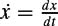

|
| |||||||||||||
|
|
||
We often need to transform from one representation of the configuration of a robot to some other representation  . A common example occurs when q represents the joint angles of a robot arm and x represents the configuration of the end effector as a rigid body in the ambient space. The representation x is more convenient when planning manipulation tasks in the world, but control of the robot arm is more easily expressed in q variables, so we need an easy way of switching back and forth. It is often the case that and are not homeomorphic; the dimension of the two spaces may not even be equal.
. A common example occurs when q represents the joint angles of a robot arm and x represents the configuration of the end effector as a rigid body in the ambient space. The representation x is more convenient when planning manipulation tasks in the world, but control of the robot arm is more easily expressed in q variables, so we need an easy way of switching back and forth. It is often the case that and are not homeomorphic; the dimension of the two spaces may not even be equal.
Using the robot arm as inspiration, we define the forward kinematics map and the inverse kinematics map . These maps may not be homeomorphisms even if the dimensions of  is related to the time derivative by
where J is the Jacobian of the map φ, also known as the differential Dφ (see appendix C). The Jacobian is also useful for transforming forces expressed in one set of coordinates to another (see chapter 4, section 4.7, and chapter 10).
The 2R robot arm of figure 3.21 has link lengths L1 and L2. Its configuration space is , and we represent the configuration by the two joint angles q =[θ1, θ2]T. The endpoint of the hand in the Cartesian space is . In this case, the dimensions of and are equal, but they are not homeomorphic. The forward kinematics map is
The inverse kinematics map φ−1 is one-to-two at most points of , meaning that the robot can be chosen to be in either the right-arm or left-arm configuration. The inverse kinematics of the 2R arm is most easily found geometrically using the law of cosines and is left for problem 20.
The Jacobian of the forward kinematics map is
Plugging in L1 = L2 = 1, θ1 = π/4, θ2 = π/2, and  as shown in figure 3.21, we find that
as shown in figure 3.21, we find that
matching the motion seen in the figure.
When sin θ2 = 0, the Jacobian J (q) loses rank, and the robot is said to be in a singular configuration. In this case, the two-dimensional set of joint velocities maps to a one-dimensional set of endpoint velocities - instantaneous endpoint motion is impossible in one direction.
A polygon moving in the plane is represented by the configuration , where (q1, q2) gives the position of a reference frame attached to the polygon relative to a world frame , and q3 gives the
orientation of relative to (see figure 3.22). A point is fixed on the polygon at r = [r1, r2]T in the polygon frame , and let position of this point in the plane. Then the forward kinematics mapping is
where we recognize the 2 × 2 rotation matrix. The inverse map φ−1 in this example is one-to-many, as the dimension of is greater than the dimension of . The velocities and are related by the Jacobian
|
|
||
|